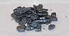

iodine

Definition: Iodine is a chemical element with the symbol I and atomic number 53. The heaviest of the stable halogens, it exists as a semi-lustrous, non-metallic solid at standard conditions that melts to form a deep violet liquid at 114 °C (237 °F), and boils to a violet gas at 184 °C (363 °F). The element was discovered by the French chemist Bernard Courtois in 1811 and was named two years later by Joseph Louis Gay-Lussac, after the Ancient Greek Ιώδης 'violet-coloured'.
Source: Wikipedia
Wikipedia Page
Wikidata Page